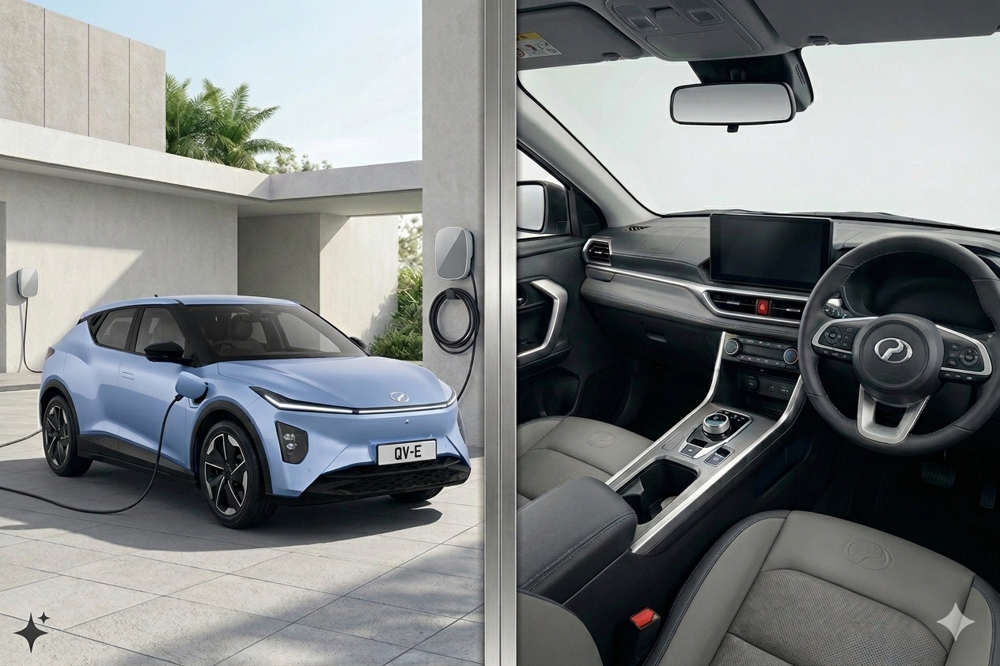
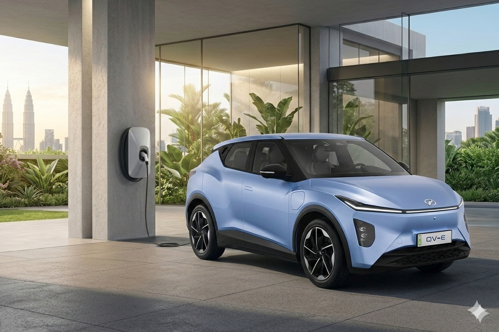
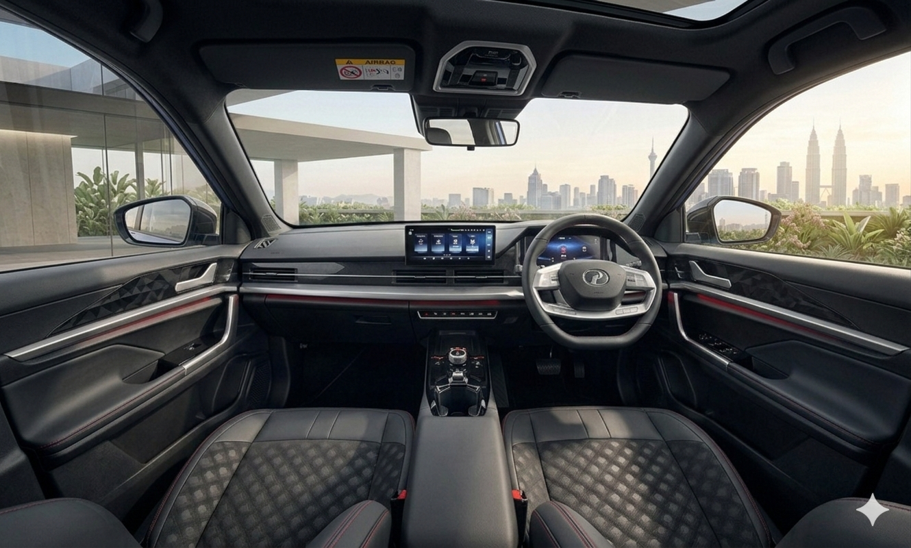

As the industry shifts further into electrified mobility, the ability to accurately recognise different types of electric vehicles is no longer optional—it is essential. For a Sales Advisor, correct identification shapes the quality of every customer interaction. Before explaining specifications, charging requirements, or performance characteristics, you must first be absolutely certain of the type of vehicle you are discussing. Misidentification does more than create confusion; it directly undermines credibility. Customers may not challenge the mistake, but they will remember the inconsistency.
Not all electrified vehicles operate the same way. A conventional Hybrid, a Plugin Hybrid (PHEV), and a Fully Electric Vehicle each function differently. They charge differently. They serve different customer needs. They come with different questions, expectations, and concerns. When assumptions replace verification, the risk of giving inaccurate advice increases significantly. In a market where confidence matters, accuracy becomes your most valuable tool.

There are two structured methods of identifying an electrified vehicle: observing the exterior and examining the interior. Both methods require careful attention and discipline. A single indicator is rarely sufficient to confirm vehicle type. Correct identification relies on combining multiple signs to build a complete picture.

Exterior
The process begins with exterior observation. The most immediate visual cue is often the badge or emblem. Labels such as “Hybrid,” “SHybrid,” “ePower,” or “EV” can signify electrified technology, usually placed at the rear or side of the vehicle. While badges are useful, they should never be treated as the sole confirmation. Some owners remove badges. Some manufacturers change them between generations. A disciplined approach requires additional cues before drawing conclusions.
Brand recognition can support your assessment. Certain manufacturers, such as Tesla or BYD, are strongly associated with fully electric vehicles. While this increases the likelihood that the vehicle is electric, it should not replace verification. Many brands offer both petrol and electric variants, so the brand itself is only a guiding reference—not definitive proof.
Another strong exterior indicator is the presence of a charging port. If a vehicle has a charging inlet, it is either a Plugin Hybrid or a Fully Electric Vehicle. A conventional hybrid that cannot be plugged in will not have this feature. Although the presence of a charging port confirms plugin capability, it does not specify whether the vehicle is a PHEV or a full BEV. Interpretation remains necessary.
Frontgrille design may also offer clues. Fully electric vehicles generally require less airflow than petrol engines, leading to closed or minimal grille designs. However, modern styling trends can make this indicator less reliable. Some petrol cars now use clean, aerodynamic front fascias, while some electric vehicles adopt traditional grille aesthetics. Grille design should therefore be treated as supporting evidence rather than a definitive identifier.

Interior
In Malaysia, another helpful indicator comes from special number plates designated for electric vehicles. These plates can reinforce the conclusion that the vehicle is fully electric. Even so, the principle remains consistent: confirmation requires more than one clue. Overconfidence arising from a single observation is one of the most common mistakes.
Once exterior cues provide initial direction, interior inspection offers stronger validation. Inside the vehicle, the central display can reveal important information. Many EVs and PHEVs display battery levels, charging status, electric drive modes, or energyflow diagrams. These graphics often show how power moves between the battery, motor, and engine. Such information provides insight into the vehicle’s actual powertrain architecture and is far harder to misinterpret.
If access to the engine bay is possible, further clues become visible. Bright orange cables are a universal indicator of highvoltage systems. These cables, used across the industry for safety, immediately confirm that the vehicle contains hybrid or electric components. Highvoltage warning labels beneath the bonnet offer additional confirmation, signalling the presence of electrified hardware that requires specialized handling.
The instrument cluster also provides valuable information. Traditional combustion vehicles typically display an RPM gauge. Electric vehicles, however, often replace this with powerusage meters, regenerative indicators, or battery status displays. Words such as “EV Mode,” “Ready,” or “Charge” may appear instead of enginerelated terminology. These subtle differences, while sometimes overlooked, are decisive indicators of electrification.
Recognising an electric vehicle is not about memorising a checklist; it is about applying disciplined observation. Exterior cues help you form your initial impression. Interior indicators verify the truth of the system. When you identify the vehicle type accurately, you position yourself to provide precise explanations tailored to the customer’s needs.
Misidentification carries real consequences. If you mistakenly describe a Plugin Hybrid as a Fully Electric Vehicle and give incorrect charging advice, how quickly would customer trust decline? In sales, recognition always comes before recommendation.
Observation builds confidence. Confidence builds trust. And trust remains the foundation of effective sales advisory in an increasingly electrified automotive market.

Apabila industri semakin bergerak ke arah mobiliti elektrik, keupayaan untuk mengenal pasti jenis-jenis kenderaan elektrik dengan tepat bukan lagi pilihan, tetapi satu keperluan. Bagi seorang Sales Advisor, pengecaman yang betul akan mempengaruhi kualiti setiap interaksi dengan pelanggan. Sebelum menerangkan spesifikasi, keperluan pengecasan atau prestasi kenderaan, anda perlu benar-benar pasti jenis kenderaan yang sedang dibincangkan. Kesilapan mengenal pasti bukan sekadar menyebabkan kekeliruan, malah boleh menjejaskan kredibiliti. Pelanggan mungkin tidak menegur kesilapan itu, tetapi mereka akan ingat ketidakkonsistenan tersebut.
Tidak semua kenderaan yang menggunakan teknologi elektrifikasi berfungsi dengan cara yang sama. Hybrid biasa, Plug-in Hybrid (PHEV), dan kenderaan elektrik sepenuhnya masing-masing beroperasi secara berbeza. Cara pengecasannya berbeza. Keperluan pelanggan yang memilihnya juga berbeza. Soalan, jangkaan dan kebimbangan pelanggan terhadap setiap jenis kenderaan juga tidak sama. Jika anda membuat andaian tanpa memastikan terlebih dahulu, risiko memberi penerangan yang tidak tepat akan meningkat dengan ketara. Dalam pasaran di mana keyakinan sangat penting, ketepatan maklumat menjadi aset paling bernilai.
Terdapat dua kaedah utama untuk mengenal pasti jenis kenderaan elektrifikasi: melalui pemerhatian pada bahagian luaran dan pemeriksaan pada bahagian dalaman. Kedua-dua kaedah ini memerlukan perhatian yang teliti dan disiplin. Satu petunjuk sahaja biasanya tidak cukup untuk mengesahkan jenis kenderaan. Pengecaman yang tepat bergantung kepada gabungan beberapa tanda supaya gambaran yang diperoleh benar-benar jelas dan menyeluruh.
Luaran Exterior
Proses mengenal pasti biasanya bermula dengan pemerhatian pada bahagian luaran kenderaan. Petunjuk visual yang paling mudah dilihat selalunya ialah lencana atau emblem pada kereta. Label seperti “Hybrid”, “SHybrid”, “ePower”, atau “EV” biasanya menunjukkan bahawa kenderaan tersebut menggunakan teknologi elektrifikasi. Lencana ini kebiasaannya terletak di bahagian belakang atau sisi kenderaan. Walaupun ia membantu, ia tidak boleh dijadikan satu-satunya bukti. Ada pemilik yang menanggalkan lencana, dan ada juga pengeluar yang menukar reka bentuk atau penamaan antara generasi model. Oleh itu, pemerhatian tambahan masih diperlukan sebelum membuat kesimpulan
Pengenalan jenama juga boleh membantu dalam membuat anggaran awal. Sesetengah pengeluar seperti Tesla atau BYD memang terkenal dengan kenderaan elektrik. Namun ini hanya memberi petunjuk awal, bukan pengesahan sepenuhnya. Banyak jenama hari ini menawarkan kedua-dua versi petrol dan elektrik, jadi jenama hanya boleh dijadikan rujukan sokongan.
Satu lagi petunjuk luaran yang kuat ialah kewujudan port pengecasan. Jika sebuah kenderaan mempunyai port pengecasan, ia biasanya sama ada Plug-in Hybrid (PHEV) atau kenderaan elektrik sepenuhnya (BEV). Hybrid biasa yang tidak boleh dicas melalui plug tidak akan mempunyai ciri ini. Walaupun port pengecasan menunjukkan bahawa kenderaan tersebut boleh dicas, ia masih tidak dapat menentukan sama ada ia PHEV atau BEV. Tafsiran lanjut masih diperlukan.
Reka bentuk gril hadapan juga kadangkala boleh memberi petunjuk. Kenderaan elektrik sepenuhnya biasanya memerlukan aliran udara yang lebih sedikit berbanding enjin petrol, jadi banyak model EV menggunakan gril yang tertutup atau sangat minimal. Namun, trend reka bentuk moden menjadikan petunjuk ini kurang konsisten. Sesetengah kereta petrol kini mempunyai reka bentuk hadapan yang lebih bersih dan aerodinamik, manakala ada EV yang masih mengekalkan rupa gril tradisional. Oleh itu, reka bentuk gril lebih sesuai dijadikan petunjuk sokongan, bukan penentu utama.
Dalaman Interior
Di Malaysia, satu lagi petunjuk yang boleh membantu ialah nombor plat khas yang diperkenalkan untuk kenderaan elektrik. Plat ini boleh menguatkan kesimpulan bahawa kenderaan tersebut adalah EV sepenuhnya. Namun prinsipnya tetap sama: pengesahan tidak boleh bergantung kepada satu petunjuk sahaja. Terlalu yakin berdasarkan satu pemerhatian adalah antara kesilapan yang paling kerap berlaku.
Selepas pemerhatian luaran memberi gambaran awal, pemeriksaan di bahagian dalaman boleh memberikan pengesahan yang lebih kuat. Di dalam kenderaan, paparan pada skrin tengah selalunya menunjukkan maklumat penting. Banyak EV dan PHEV memaparkan tahap bateri, status pengecasan, mod pemanduan elektrik atau rajah aliran tenaga. Paparan ini biasanya menunjukkan bagaimana tenaga bergerak antara bateri, motor elektrik dan enjin. Maklumat seperti ini memberi gambaran yang lebih jelas tentang sistem kuasa sebenar kenderaan dan jauh lebih sukar untuk disalah tafsir.
Jika ada peluang untuk melihat ruang enjin, beberapa petunjuk tambahan juga boleh dikenal pasti. Kabel berwarna oren terang merupakan tanda universal bagi sistem voltan tinggi. Kabel ini digunakan secara meluas dalam industri automotif untuk tujuan keselamatan, dan kehadirannya menunjukkan bahawa kenderaan tersebut mempunyai komponen elektrik atau hibrid. Label amaran voltan tinggi di bawah bonet juga menjadi petunjuk tambahan bahawa kenderaan itu dilengkapi dengan sistem elektrifikasi yang memerlukan pengendalian khas.
Paparan meter pada papan instrumen juga memberi maklumat penting. Kenderaan enjin pembakaran biasa biasanya mempunyai meter RPM. Dalam kenderaan elektrik pula, meter ini selalunya digantikan dengan paparan penggunaan kuasa, indikator brek regeneratif, atau status bateri. Perkataan seperti “EV Mode”, “Ready”, atau “Charge” mungkin muncul menggantikan istilah yang berkaitan dengan enjin. Perbezaan kecil seperti ini kadang-kadang terlepas pandang, tetapi sebenarnya menjadi petunjuk jelas bahawa kenderaan tersebut menggunakan sistem elektrifikasi.
Mengenal pasti kenderaan elektrik bukan sekadar menghafal senarai tanda, tetapi memerlukan pemerhatian yang teliti dan teratur. Petunjuk luaran membantu membentuk andaian awal, manakala petunjuk dalaman mengesahkan sistem sebenar kenderaan. Apabila jenis kenderaan dikenal pasti dengan tepat, anda boleh memberikan penerangan yang lebih tepat dan sesuai dengan keperluan pelanggan.
Kesilapan mengenal pasti jenis kenderaan boleh memberi kesan yang besar. Jika Plug-in Hybrid tersilap diterangkan sebagai EV sepenuhnya dan maklumat pengecasan yang salah diberikan, kepercayaan pelanggan boleh hilang dengan cepat. Dalam dunia jualan, pengenalpastian sentiasa datang sebelum cadangan.
Pemerhatian yang baik membina keyakinan. Keyakinan membina kepercayaan. Dan kepercayaan adalah asas kepada peranan Sales Advisor dalam pasaran automotif yang semakin menuju ke arah elektrifikasi.